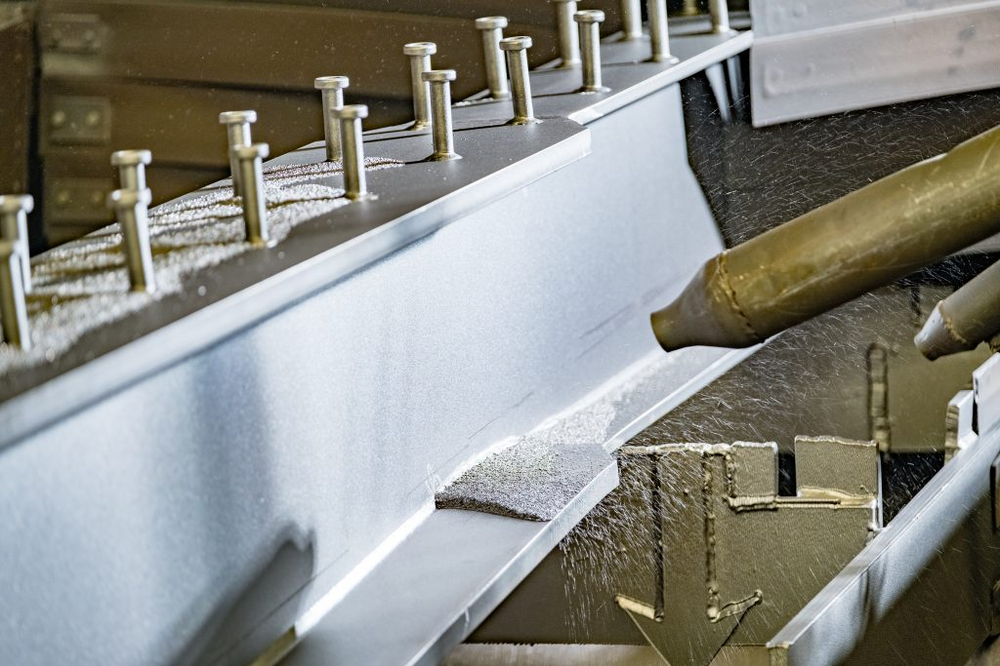

Mặc dù thép có sức mạnh và độ bền đáng kinh ngạc nhưng khả năng dễ bị cháy của chúng có thể là mối lo ngại lớn. Vì lý do đó mà các loại sơn, dung dịch chống cháy đã nổi lên, trở thành một giải pháp đáng tin cậy, tạo ra một hàng rào bảo vệ giúp trì hoãn sự lây lan của ngọn lửa và kéo dài thời gian quý báu trong trường hợp hỏa hoạn khẩn cấp.
Tuy nhiên với vô số lựa chọn có sẵn, việc chọn loại sơn chống cháy kết cấu thép phù hợp có thể khiến bạn choáng ngợp. Để đơn giản hóa việc tìm kiếm của bạn, bài viết dưới đây tổng hợp danh sách Top 5 loại sơn chống cháy kết cấu thép tốt nhất trên thị trường.
Sơn chống cháy kết cấu thép là một lớp phủ được sử dụng phổ biến nhất để bảo vệ thép khỏi lửa và hoạt động như một chất cách điện, tạo thành than rắn khi phản ứng với nhiệt. Sơn chống cháy có thể được áp dụng trên thép dưới dạng lớp phủ màng mỏng hoặc dày.
Vật liệu sơn chống cháy kết cấu thép màng mỏng có gốc nước hoặc gốc dung dịch và thường được sử dụng để ngăn ngừa hỏa hoạn trong các tòa nhà thông thường. Về sơn chống cháy màng dày thì chúng có độ dày hơn và hữu ích ở những nơi mà màng mỏng không hoạt động hiệu quả, ví dụ điển hình là kết cấu thép bên ngoài của các tòa nhà chọc trời.
Biện pháp phòng cháy chữa cháy là điều rất quan trọng, khiến cho việc bảo vệ kết cấu thép bằng sơn chống cháy phù hợp là một khoản đầu tư cần thiết. Danh sách 5 loại sơn/dung dịch chống cháy kết cấu thép hàng đầu này trang bị cho bạn kiến thức để đưa ra quyết định sáng suốt.